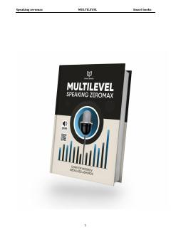

MSMultilevel imtihonlari uchun namunaviy speaking javoblari va tayyorgarlik strategiyalari to'plami.
Ushbu kitob Multilevel imtihonlarida B2 va C1 darajalariga erishishni maqsad qilgan o'quvchilar uchun mo'ljallangan qo'llanmadir. Unda imtihon formatiga mos namunaviy javoblar, mavzuga oid lug'atlar va og'zaki nutqni rivojlantirish strategiyalari batafsil yoritilgan.